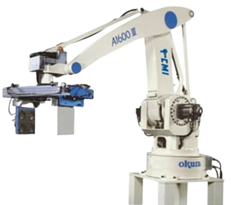

Robô industrial • coordenadas esféricas
Robô que opera utilizando coordenadas esféricas.

Os robôs polares utilizam um sistema de coordenadas esféricas, combinando movimentos de rotação, inclinação e extensão.
Possuem uma base rotativa, um braço que pode inclinar e um eixo que permite extensão, cobrindo uma grande área de trabalho.
Utilizados em soldagem, pintura, fundição e manipulação de materiais.
Permitem monitoramento remoto e análise de desempenho em sistemas industriais.